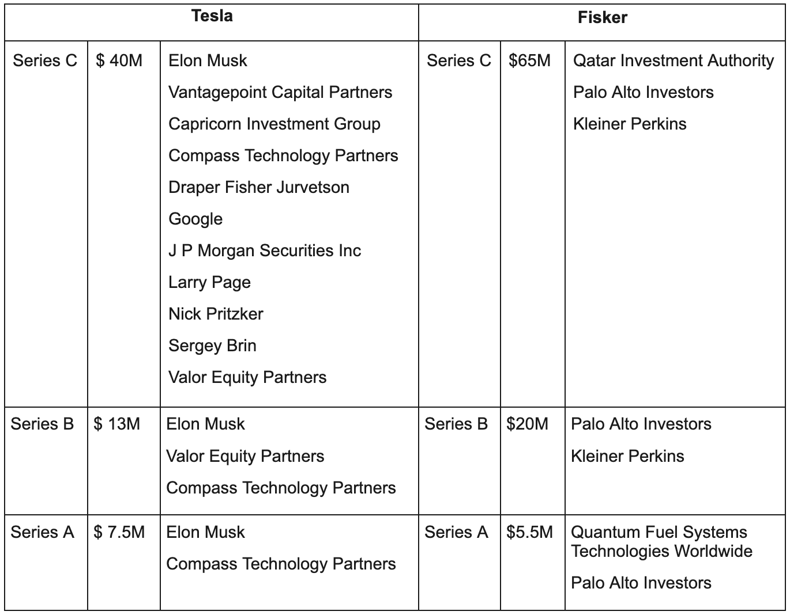
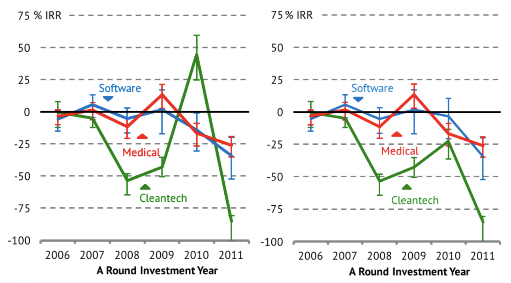

The past, present, and future of climate investing
Part 1 - winners of the first wave
By Neil Hacker
The first post in this series focuses on something that gets less attention than it maybe should, the success stories of the first wave of climate investing. Not every company founded in the 2006-2012 period failed and some, Tesla, are now in the category of largest companies in the world. This post is going to look at some of the companies and sectors that ended up doing particularly well and what can be learnt from these success stories. If you want your tails of gloom don’t worry, later posts in this series will have a look at why the first wave of climate investing was overwhelmingly a bad time for investors. For now though let’s take a look at some of the winning companies.
Just a warning the category labels, i.e “hard tech” don’t mean that entire area did well, just that the companies in the section fall into that category
Hard tech - Tesla and Quantumscape
It is difficult to overstate the impact Tesla has had on cleantech or honestly the world. Enough has been written about most of its story that I’m not going to go into too much detail here. However, there are a few points I want to emphasise. The first thing I want to touch on is the founding and very early life of Tesla. You can debate the specifics but Elon came in so early, and was responsible for so much of the actual growth that it seems fair to call him a co-founder. He had, however, no previous experience in the cleantech space or for that matter in hardware products at all and got involved after selling his stake in paypal. This, previously successful entrepreneurs doing particularly well, is something I’m going to come back to later.
The company owes a lot to execution but it is also true that it would simply not exist without the US government. The DoE loan office gave Tesla loans that saved it from going bankrupt. This was actually the exact same loan office who gave loans to Solyndra, of which more later. Taken from a portfolio view the collection of loans may have been one of the most successful government programs ever at accelerating the green transition. The degree to which government involvement is beneficial is a tricky thing to judge, it is undoubtedly needed in the deeptech sector but too much reliance can cloud genuine price signals and mask technical risk.
Tesla has been a staggering success but it is one that few VCs actually got in on. If you look at just the series A & B rounds only Compass Technology partners and Valor Equity Partners participated (also Musk did in both). In their series C you had many more investors but only two more VC firms (Capricorn Investment Group and Draper Fisher Jurvetson) otherwise you had institutional investors, companies or high net worth individuals.

Part of the reason for this is just that there isn’t a whole lot of space in early rounds but also Tesla was not the only electric car maker raising money at the time, Fisker Automotive was to many investors the better bet. In fact Kleiner Perkins, the face for cleantech investing, went with Fisker over Tesla.
This gets at one of the challenges of climatetech investing, not only do you need to back the winning company, as with all of venture, but it can be very expensive to make your bets, i.e Fisker was one of Kleiner Perkins costliest mistakes. Later one we’ll look at which sectors today might have the same dynamics, for now though it is fair to say that not only did Tesla succeed wildly for its investors, the sheer scale of its success has had massive ripple effects for all climate tech. Here was proof that you really can get amazingly rich building and investing in companies that change the world for the better.
Founded in 2010 Quantumscape looked for a long time like a nightmare for investors, trying to make a new type of lithium battery it went almost a decade with no revenue to speak of. However, in 2020 it IPO’d and now has a market cap of ＄4-5bn, though this is very volatile, it was ＄40-50bn just over a year ago. For investors this is now a success story, though the company is secretive and little is actually known about its batteries so whether it manages to grow from here is still up for some debate.
This was also a company actual VCs seem to have got into a lot more, the seed was done by Khosla Ventures, Kleiner Perkins invested in the next round and then in the following venture round Prelude Ventures, Lightspeed Venture Partners, and Capricorn Investment Group were involved. Quantumscape’s journey highlights a fact that recurs a lot in the more CAPEX heavy investment areas and that is the incredibly long lead items that are often required before a company can exit and provide profits.
Efficiency - Nest and Opower
Nest was one of the absolute darlings of the first wave, a definitive venture backed win. Nest labs was founded in 2010 by Tony Fadell (creator of the ipod) and Matt Rogers (senior manager on ipod and iphone software) and then acquired by Google in 2014 for ＄3.2bn. In fact, as a 2016 MIT report titled “Venture Capital and Cleantech: The Wrong Model for Clean Energy Innovation” shows Nest is responsible for the only year where investing in cleantech companies had a higher IRR than software or medical investing.

The above charts show the IRR in different sectors based on the year of companies series A rounds, Nest labs is included in the left chart and excluded in the right chart showing what a huge effect it had, being solely responsible for any year having a positive IRR.
Nest is another example of a cleantech company being founded by people from outside the climate ecosystem but doing amazingly well. It is also an example of a “hybrid” play that paired software with hardware making it much more similar to traditional venture investments than, for example, companies making biofuels. It should be noted that some people say that the acquisition price actually reflected a very expensive way for Google to basically hire the founders of Nest rather than paying for it on strictly business merits, but the returns still speak for themselves, and after all backing a good founding team is part of what it means to back a good company.
Opower was founded in 2007 and was a Saas company that provided insights to utility companies that helped them save power. It was acquired by Oracle in 2016 for around ＄500M. Being a pure software play it too was more in line with what venture investors would typically fund and in fact this was one of the better performing investments of the Kleiner Perkins portfolio.
Financing and services - Solarcity and Sunrun
These are two companies that instead of making solar panels sold and installed them, primarily to residential customers but also commercial. Solarcity was acquired by Tesla in 2016 acquisition for ＄2.6 after being founded in 2006, Sunrun was founded in 2007 had its IPO in 2015 and is now worth around ＄7bn, so both are success stories.
These companies were more in the mould of traditional venture than most of the investments in this wave. They didn’t take on manufacturing risk, rather they were largely service companies whose main risk was execution. Solar manufacturing was a tricky industry, not only were there multiple potential dominant technologies but manufacturing margins were incredibly slim. Building the panels subjected you to the full competitive pressures of the entire world's manufacturing ability. Installing them though left you competing on a much more regional, or national, playing field where you can have much more control and pricing power.
The missed sector - Fracking
This might be a controversial sector to include in climatetech post but I think it’s warranted. It is true that fracking for oil has turned the US from an importer of oil to an exporter rivalling Saudi Arabia and has massively increased the supply of global oil which has been pretty unambiguously bad for the climate. However, natural gas fracking has been one of the largest contributors to falling US coal usage and the single largest driver of declining US power sector emissions. Also, at the time fracking technologies were being brought online it looked like natural gas would be an even larger player in the energy transition than it is now, given the costs of renewables.
Counting fossil fuel projects as cleantech is also not completely without precedent, Kleiner Perkins invested in at least two companies that aimed to make oil exploration more efficient. It also fits the timeline very well as the sector really only started to get going in the same period as the rest of the first wave of climatetech investments.
This sector is now worth billions and yet VCs are basically completely absent so why is that and are there any parallels today? Two main reasons poke out as to why VCs were left on the sidelines here. Firstly, many of the big fracking players were not startups but either got started as divisions in other large companies or were bankrolled by individuals/companies who did not need VC funding. For example, the Mitchell Energy & Development Corp, the company that basically got fracking to work, was already a fortune 500 oil and gas company when it decided to research shale.
A second issue is around cash flows and expected returns. Venture is structured to take many bets with a few succeeding massively and most not going anywhere and this was just not the structure fracking presented. If you want your power law distributed energy results oil field drilling fits the bill pretty well but instead of venture you got massive oil companies who could internalise the risks. With fracking though you had much higher certainty of returns from tapping a well and it would be drained much faster so you couldn’t milk it for multiple decades. This turns fracking into something that looks a lot more like a private equity style industry, high capex, low but reasonable and predictable margins.
Also, as Byrne Hobart writes about Aubrey McClendon, the founder of Chesapeake. “He built a fracking behemoth, not on the basis of superior operating economics, but on the basis of being able to raise enormous sums in the equity and high-yield markets (from 2001 to 2012: ＄15.5bn in debt and ＄16.4bn in equity, paying ＄1.1bn in fees along the way”. Can you even imagine the dilution a VC would have to put up with for a company raising ＄16.4bn in equity, and remaining unprofitable for basically the entire time, it can make things like Uber and WeWork look almost tame.
In fact you basically need continuous flows of vast amounts of capital to get the businesses running at all. As wells deplete so quickly you need to constantly be drilling new ones and hope that you get better and better at it, this it turns out is an incredibly expensive way to try to retire some of your technical risk. Basically whether fracking becomes profitable or not, something largely outside your control anyway, you will need massive and continuous injections of capital in the short run, none of which is amenable to the VC model.
But I did say that things turned out well and they did, about a year or two ago when for the first time ever fracking became an actually profitable sector after being in the black for almost a decade and a half. It really does seem like venture capital was never going to be able, and honestly based on the agreement VCs have with their limited partners, never should have gone after this sector. Some things in life are both profitable in the long run and something VCs shouldn’t touch.
But does this teach us anything about future, or emerging, sectors VCs might want to stay away from? The short answer is it is difficult to say. In one sense the sectors that would most mirror this would be ones VCs can’t invest in anyway because, like fracking, it is large existing companies who are doing it. Things like green ammonia is something that comes to mind in this category, Saudi Arabia is already financing truly huge projects in the area and it seems like a particularly difficult sector for a startup to come into, even with better technology, and beat the sheer economies of scale that incumbents have in the commodity market.
Lessons
One thing many of these companies have in common is that they were created by founders who had already been successful scaling businesses or products. Jagdeep Singh of Quantum scape had founded an optical networking company and run that for 8 years, Elon had co-founded Paypal before he co-founded Tesla, Lyndon Rive of Solarcity had founded Everdream a desktop management software services company and Tony Fadell created the ipod one of the quickest executed hardware products in history. It seems like past experience at creating successful companies served founders especially well in the realm of climatetech which could be especially brutal to build in.
However, this doesn’t necessarily make things easy for investors. John Doerr of Kleiner Perkins has said that one of the reasons they backed Fisker instead of Tesla was that the founding team had much more experience in the automotive sector. Maybe one lesson here is the classic start up one that founders with big past wins, no matter the industry, are often a good idea to back, although I’m sure you can imagine this being taken too far, cough Flowcarbon cough.
A lot of successful results came from companies innovating on new ways to deliver climate solutions, not on new climate solutions themselves, driving efficiency gains or adding a finance and service layer on top of existing solutions. These companies are often much more in the classic venture mould, they are relatively low CAPEX and you can get network effects, though in most cases above this was a very small aspect of the companies successes. We’ll see in future posts how some VCs this wave are leaning into this investment style seeking a balance between classic venture investing and climate focused companies.
While all of the companies above did have successful results these results still differ dramatically. Three of the six companies (Solarcity, Nest, and Opower) mentioned above got acquired and these were the three lowest valued returns, although from an IRR standpoint Nest was excellent. The long tail of returns in the first wave was truly extreme, with most companies going nowhere, a small handful returning single digit billions, maybe one or two at the ＄10bn mark and then Tesla. Compared to a sector like software where many more companies get over the ＄10bn mark this was a brutal investment landscape.
One of the bits of conventional wisdom was that almost no companies returned any sort of attractive amount of money. This is somewhat fair and is even more fair if you consider that many of these pronouncements were made around 2015 at which time even fewer of the companies above had returned any money. This gets to a central issue around climate investing which I’ll talk about more in other posts, the exit time.
Most venture funds want returns in hand in maybe 10 years at most, and in climate tech which often, and especially in the first wave, dealt with a lot with technical risk and scaling challenges this can be a very short time. Quantumscape basically went that entire time with no revenue. The landscape looks somewhat better if viewed from the lens of today but these timelags can be a killer for a fund, in later posts we’ll have a look at if this seems like it’s still a significant problem.
The upshot of this batch of winners is that investing in climate seems to have been much, much more challenging than investing in almost any other vertical in the 2006-2011 wave. However, there were wins and while few and far between they were more numerous than people typically credit this wave of investing with.
That shouldn’t necessarily be too much comfort to investors, there were real reasons to bet for companies in the same areas as these winners that didn’t pan out. In the next post in this series we’ll take a look at just why so many companies failed and why on the whole investors did so poorly.